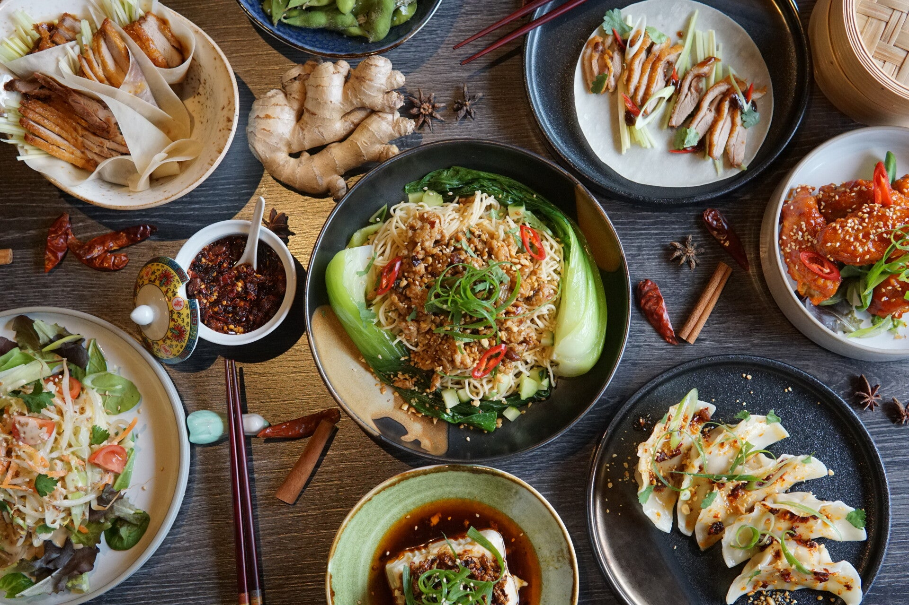
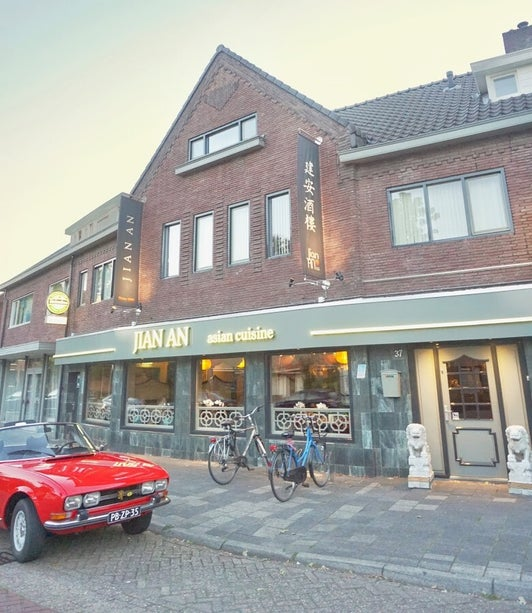

Asian cuisine in Tongelre, sinds 1980
Jian An
Authentieke en vernieuwende Aziatische gerechten. Voor de afhaal, aan huis bezorgd of gezellig in ons restaurant aan 't Hofke.
- Ma t/m zo16:00 tot 20:30 uur
- Gratis parkerendirect voor de deur
- 't Hofke 375641 AH Eindhoven
Welkom bij Jian An
Al sinds 1980 zijn wij te vinden aan 't Hofke 37 in Tongelre om u de heerlijkste oosterse gerechten voor te schotelen.
Authentieke en vernieuwende Aziatische gerechten voor de afhaal of gezellig in ons restaurant. Een plek voor jong en oud, waar ons team iedere dag voor u klaarstaat. Gemoedelijk, lekker en gastvrij.
Wij hopen u snel te zien!

Afhalen of laten bezorgen
Wij staan al jaren bekend om onze smaakvolle afhaalgerechten, die in een mum van tijd voor u bereid worden. Bespaar tijd bij het afhalen door vooruit te betalen. Parkeren voor de deur is gratis.
Afhaalmenu voor 2 personen
€ 36,40
- Babi Pangang
- Foe Yong Hai
- Saté kip (2 stokjes)
- Ko Lo Yuk (4 stuks)
- Mini loempia's (6 stuks)
- Kipfilet in ketjapsaus
- Nasi, bami of rijst naar keuze
Vragen of opmerkingen?
Kunt u iets niet vinden, of heeft u een op- of aanmerking? Bel ons of stuur een bericht via het contactformulier of e-mail.
Menukaart
Onze volledige kaart, met de nummers die u bij het bestellen kunt noemen. Prijzen ziet u bij het online bestellen.
De kaart is overgenomen uit onze allergenenlijsten: afhaalgerechten (pdf) en restaurant (pdf).
Eten in het restaurant
Gezellig aan tafel, met de gerechten van onze restaurantkaart.
Wilt u een tafel reserveren? Bel ons op +31 (0)40 281 58 46. U kunt ook het contactformulier of e-mail gebruiken; doe dat dan bij voorkeur minimaal 24 uur van tevoren.
Voedselallergie?
In onze producten kunnen verschillende soorten allergenen aanwezig zijn. Volgt u een speciaal dieet of heeft u een allergie? Laat het ons weten, dan houdt ons team rekening met uw wensen. Heeft u een vraag over de samenstelling van een gerecht? Vraag het een medewerker, we helpen u graag.
Werken bij Jian An
Zoek jij een nieuwe vaste baan of bijbaan? Parttime of fulltime, salaris volgens cao. Meer werken is meer kunnen, en meer kunnen is meer verdienen.
Bediening / afhaalbalieParttime of fulltime, cao
Wat ga je doen?
- Serveren van dranken en gerechten
- Opnemen van bestellingen
- Voorbereidingen treffen voor de shift
- Aannemen van tafelreserveringen
- Afrekenen met gasten
Wat vragen we?
- Je bent representatief en hebt een flexibele houding
- Ervaring in de horeca is een pré
- Je bent communicatief vaardig
- Je kunt zelfstandig werken
- Je spreekt Nederlands en/of Engels
- Beschikbaar in het weekend en op feestdagen
Zelfstandig werkend kokParttime of fulltime, cao
Wat ga je doen?
- Zelfstandig en in teamverband authentieke Aziatische maaltijden en bereidingstechnieken ontwikkelen, bereiden en verbeteren
- Mise en place
- Nasi-, bami- en mihoengerechten bereiden uit de wok
- De werkplek schoonhouden en -maken
- Werken volgens HACCP
- Ingrediënten beoordelen op versheid, smaak en houdbaarheid
Wat vragen we?
- Je bent representatief en hebt een flexibele houding
- Ervaring in de horeca is een pré
- Je bent communicatief vaardig
- Je kunt zelfstandig werken
- Je spreekt Nederlands en/of Engels
- Beschikbaar in het weekend en op feestdagen
Solliciteer direct: stuur je cv en motivatie naar info@jianan.nl, loop binnen of bel 040 281 58 46. Vragen over een functie? Neem gerust contact op.
Veelgestelde vragen
Hoe bestel ik vooruit?
U kunt kiezen uit bestellen via Foodtown of via Sitedish.
Foodtown: selecteer eerst uw volledige bestelling en kies dan "afrekenen". Kies daarna bij bezorgtijd "Wijzig besteldatum" en verander de datum naar de gewenste dag. U kunt maximaal een week vooruit bestellen.
Sitedish: hier kunt u niet zo ver vooruit bestellen. Bel ons dan direct na het plaatsen van uw bestelling om door te geven dat die voor een andere dag is.
Is parkeren voor de deur gratis?
Ja, parkeren is gratis.
Hoe lang bestaat Jian An al?
De zaak bestaat sinds 1980.
Contact en route
Jian An't Hofke 37
5641 AH Eindhoven
Openingstijden
Maandag t/m zondag16:00 - 20:30
Zo vindt u ons
Ons restaurant is makkelijk te bereiken, met gratis parkeergelegenheid voor de deur. In de buurt liggen het Van Gogh-Roosegaarde fietspad, de Sint-Martinuskerk, het Oude Raadhuis, de Mariakapel, de Wasvenboerderij en Sectie-C. Nuenen en Geldrop liggen vlakbij.